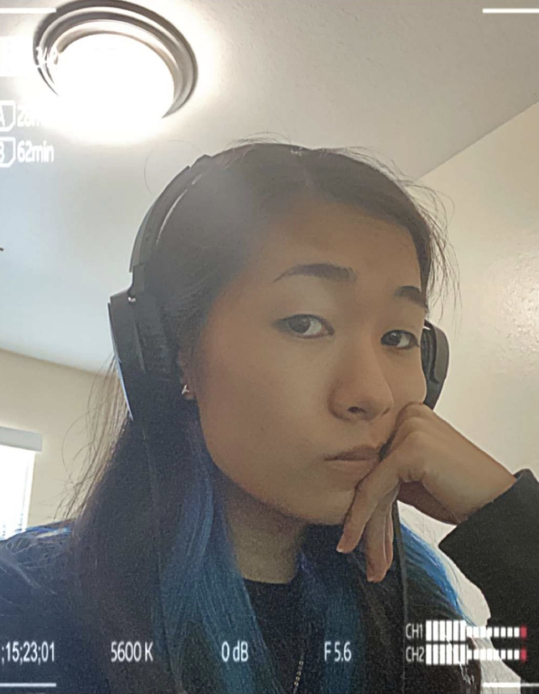

Trinity Phan-Low
This is my CST 252 website! Welcome! My name is Trinity Phan-Low. I am a third year at CSUMB, transferring from De Anza College. I am a Communication Design major with a concentration in Game Design. I love video games, Dungeons and Dragons, drawing, etc. Some of my favorite music artists are the Artic Monkeys and Paramore.
This page was generated from Wes' File Structure Template Repo.
